Les utilisateurs de la Force
L'ordre Jedi
L’Ordre Jedi est une ancienne organisation de moines‑guerriers sensibles à la Force et dédiés au côté lumineux et qui on pour arme un sabre laser “L'arme noble d'une époque civilisée”. Fondé il y a des millénaires, il se consacre à la paix, à la connaissance et à l’équilibre. Les Jedi vivent au Temple de Coruscant, où ils forment leurs membres dès l’enfance et sont dirigés par un Conseil de Maîtres. Pendant des siècles, ils servent la République comme diplomates et protecteurs.Mais leur proximité avec le pouvoir politique les affaiblit. Manipulés par Dark Sidious, ils sont entraînés dans la Guerre des Clones et perdent leur clairvoyance . Leur chute survient brutalement avec l’Ordre 66, qui entraîne leur extermination par les clones et la trahison d’Anakin Skywalker. Quelques survivants se cachent, et plus tard, Luke puis Rey tentent de faire renaître leur héritage. Malgré leur destruction, les Jedi restent un symbole durable de lumière et d’espoir dans la galaxie.
Et voici les 5 jedi les plus connus de la saga :
| top | nom | descriptif |
|---|---|---|
| 1 | Yoda | Le plus sage et le plus puissant des Maîtres Jedi. Il forme des générations de Jedi pendant plus de 800 ans. |
| 2 | Luc | Le héros de la trilogie originale. Il ramène son père vers la lumière et tente de reconstruire l’Ordre Jedi. |
| 3 | Obi Wan Kenobi | Maître d’Anakin puis de Luke. Figure emblématique de la prélogie et de la trilogie originale. |
| 4 | Anakin Skywalker | Prodige de la Force, “Élu” censé apporter l’équilibre… avant de tomber du côté obscur. |
| 5 | Ahsoka | Ancienne Padawan d’Anakin. Elle quitte l’Ordre mais reste l’une des plus grandes défenseures du côté lumineux. |
L'ordre Sith
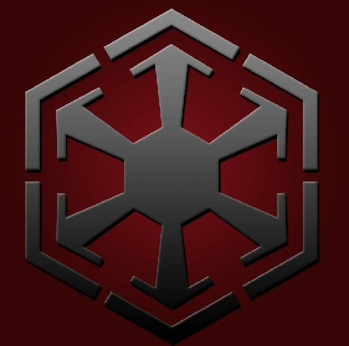
Les Sith sont une ancienne confrérie d’utilisateurs du côté obscur, née de Jedi renégats qui ont rejeté la maîtrise de soi pour embrasser la passion, la colère et l’ambition. Obsédés par le pouvoir, ils se déchirent pendant des siècles jusqu’à ce que Dark Bane impose la Règle des Deux : un maître pour posséder le pouvoir, un apprenti pour le convoiter. Cachés dans l’ombre, les Sith infiltrent la République et affaiblissent les Jedi de l’intérieur. Leur triomphe culmine avec Dark Sidious, qui manipule la Guerre des Clones, détruit l’Ordre Jedi et fonde l’Empire avec Dark Vador. Leur domination prend fin avec la chute de Sidious, mais leur héritage et leur philosophie continuent de hanter la galaxie.
Et voici les 5 Sith les plus connus de la saga :
| top | nom | descriptif |
|---|---|---|
| 1 | Dark Sidious(Palpatine) | Le Seigneur Sith qui manipule la République, détruit les Jedi et crée l’Empire. |
| 2 | Dark Vador (Anakin Skywalker) | Le plus célèbre des Sith. Bras droit de Sidious, puis sauveur final de la galaxie. |
| 3 | Dark Maul | Sith acrobatique et redoutable, survivant acharné, obsédé par sa vengeance contre Obi Wan |
| 4 | Dark Bane | Le Sith qui crée la “Règle des Deux” : un maître, un apprenti. Sa philosophie fonde l’ère moderne des Sith. |
| 5 | Dark Tyranus ( Compte Dooku) | Ancien Jedi devenu Sith. Élève de Sidious et architecte de la Guerre des Clones. |
Les chasseurs de prime
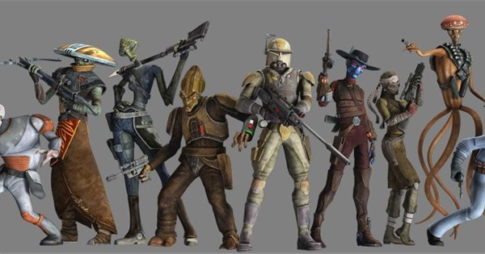
Les chasseurs de primes sont des mercenaires indépendants qui opèrent en dehors des lois et des gouvernements. Ils ne servent ni la République, ni l’Empire, ni les criminels : ils servent le contrat le mieux payé. Souvent solitaires, parfois membres de guildes, ils traquent fugitifs, criminels, cibles politiques ou même Jedi selon la demande. Leur monde est brutal, régi par la réputation, l’efficacité et la survie. Certains sont honorables, d’autres impitoyables, mais tous évoluent dans les zones grises de la galaxie, entre cartels, syndicats criminels et conflits galactiques. Leur influence est discrète mais essentielle : dans l’ombre, ils peuvent changer le destin d’un individu… ou d’un empire.
Et voici les 5 chasseurs de prime les plus connus de la saga:
| top | nom | descriptif |
|---|---|---|
| 1 | Boba Fett | Le plus iconique. Fils cloné de Jango, redouté pour son efficacité et son armure mandalorienne. |
| 2 | Jango Fett | Modèle génétique de l’armée clone. Maître tacticien et tireur d’élite. |
| 3 | Cad Bane | Chasseur de primes légendaire, froid, calculateur, rival des Jedi et des Sith. |
| 4 | Bossk | Chasseur trandoshan féroce, spécialiste de la traque et de la capture vivante. |
| 5 | Fennec shand | Assassine d’élite devenue l’une des mercenaires les plus redoutées de la galaxie et alié de Boba Fett. |
Les stormtroopers
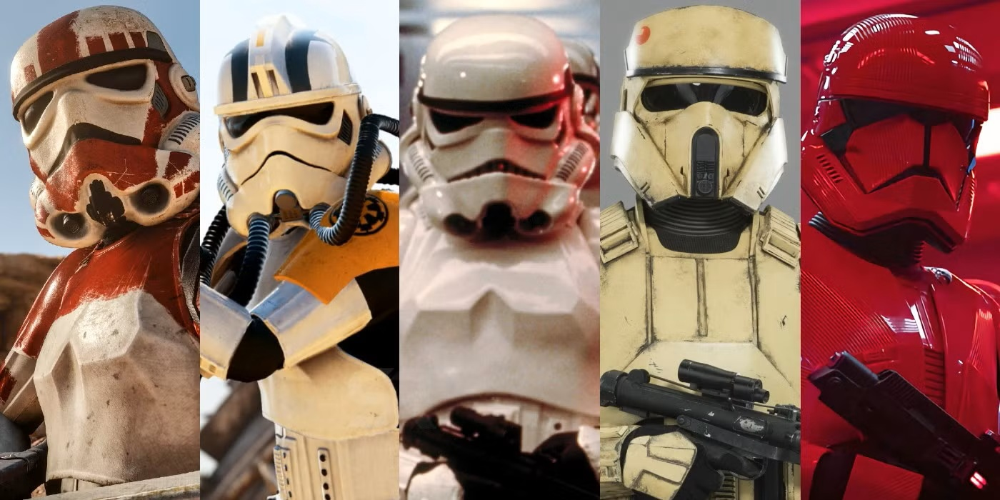
Les Stormtroopers sont les soldats d’élite de l’Empire Galactique, créés pour remplacer l’armée clone après la chute des Jedi. Contrairement aux clones, ils sont recrutés parmi la population, souvent conditionnés, endoctrinés ou arrachés à leur famille dès l’enfance. Leur rôle est d’imposer l’autorité impériale, d’écraser les rébellions et de maintenir la peur dans la galaxie.Uniformes, disciplinés et interchangeables, ils incarnent la puissance impersonnelle de l’Empire. Malgré leur réputation de mauvais tireurs, ils restent une force massive, organisée en unités spécialisées adaptées à tous les environnements : désert, neige, espace, jungles ou opérations d’élite. Leur héritage se poursuit plus tard avec les Stormtroopers du Premier Ordre, encore plus endoctrinés et militarisés.
Et voici les 5 unités de stormtoopers les plus connus de la saga :
| top | nom | descriptif |
|---|---|---|
| 1 | stormtroopers standar (TK trooper) | L’unité de base de l’Empire. Soldats polyvalents, utilisés pour l’occupation, les patrouilles et les batailles classiques. |
| 2 | snowtroopers | Spécialisés dans les environnements glacés. Ils apparaissent notamment lors de l’assaut sur Hoth. |
| 3 | scout trooper | Légers, rapides et équipés pour la reconnaissance. On les voit sur Endor avec leurs speeder bikes. |
| 4 | death trooper | Unités d’élite en armure noire, assignées aux officiers impériaux de haut rang comme Krennic ou Thrawn. |
| 5 | shoretroopers (Coastal Troopers) | Soldats spécialisés dans les zones tropicales et côtières. Très présents sur Scarif dans Rogue One. |
Les Soldats clones
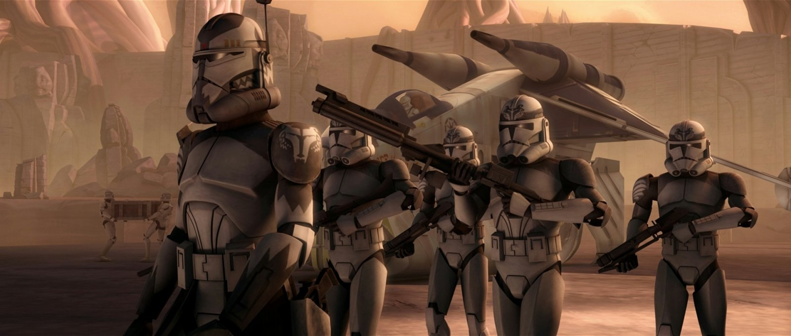
Les soldats clones sont une armée créée par la République à partir de l’ADN du chasseur de primes Jango Fett. Conçus pour être disciplinés, obéissants et efficaces, ils grandissent accélérés et reçoivent un entraînement militaire intensif dès leur création. Organisés en légions et en unités spécialisées, ils servent sous les ordre des généraux Jedi durant la Guerre des Clones, formant des légions redoutable sur le champ de bataille.Bien qu’ils soient programmés pour obéir, beaucoup développent une personnalité propre, un sens de l’honneur et une loyauté profonde envers leurs frères et leurs commandants Jedi. Leur destin bascule avec l’Ordre 66 : une puce implantée dans leur cerveau les force à trahir les Jedi et à mettre fin à la République. Après la guerre, ils sont progressivement remplacés par les Stormtroopers impériaux. Malgré leur tragédie, les clones restent l’une des armées les plus emblématiques et humaines de la galaxie.
Et voici les 5 unités de clones les les plus connus de la saga:
| top | nom | descriptif |
|---|---|---|
| 1 | La 501e Légion | Unité la plus célèbre, dirigée par Anakin puis par Rex. Présente dans les batailles majeures et tristement connue pour l’assaut du Temple Jedi lors de l’Ordre 66. |
| 2 | Le 212e Bataillon d’Attaque | Commandée par Obi‑Wan Kenobi et le Commandant Cody. Spécialisée dans les assauts terrestres et les opérations de siège. |
| 3 | Le 104e Bataillon (Wolfpack) | Dirigé par le Commandant Wolffe et le Maître Jedi Plo Koon. Réputé pour sa discipline et son efficacité tactique. |
| 4 | La Bad Batch (Clone Force 99) | Unité d’élite composée de clones “défectueux” mais surdoués. Experts en missions impossibles et opérations spéciales. |
| 5 | La 41e Légion d’Élite | Sous le commandement de Luminara Unduli et du Commandant Gree. Spécialisée dans les environnements difficiles, notamment les jungles (Kashyyyk). |
Les peuples connus
Les Wookiees
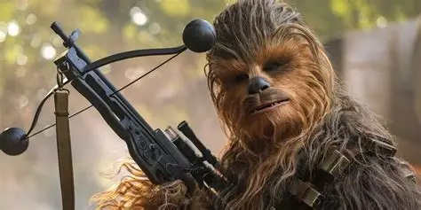
Peuple robuste et loyal originaire de Kashyyyk. Connus pour leur force immense, leur sens de l’honneur et leur lien profond avec la nature. Malgré leur apparence sauvage, ils sont intelligents, ingénieux et très attachés à leur famille et leur clan.
Le Wokiee le plus célebre est sans aucun doute Chewbacca le copilot et ami de Han Solo
Les Mandalorian
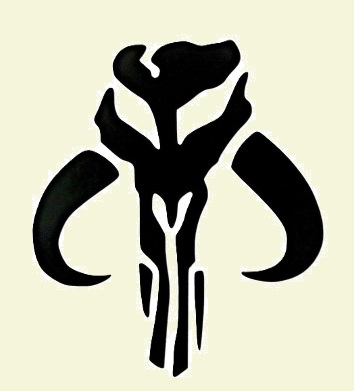
Société guerrière dispersée à travers la galaxie, célèbre pour ses armures iconiques et son code d’honneur/crédo strict. Leur culture valorise la discipline, la stratégie et la survie. Ils ne sont pas une espèce, mais un peuple unifié par une tradition martiale.
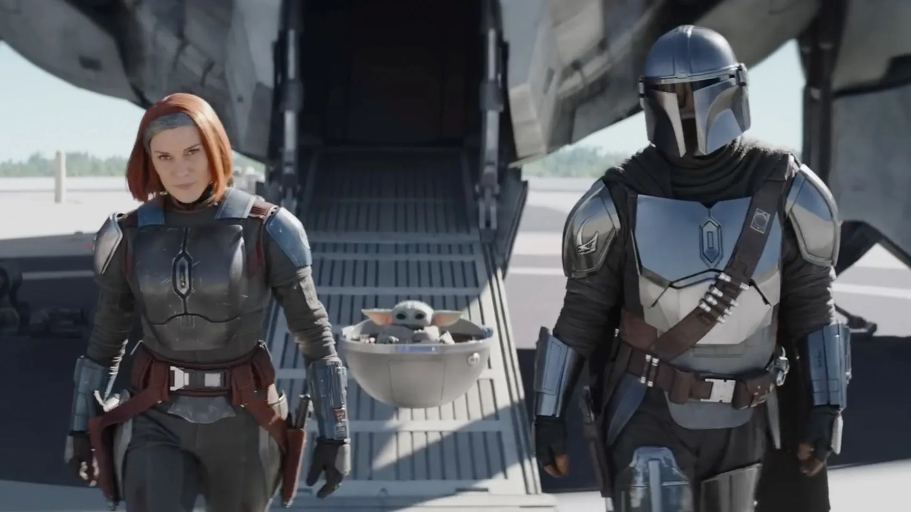
Les mandalorians les plus célebres sont surement > Din Djarin et Bo Katan Kryze
Les Hutts
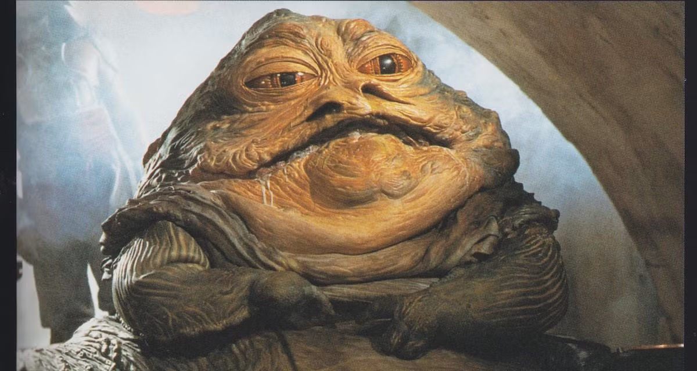
Espèce massive et influente, dominante dans la pègre galactique. Les Hutts contrôlent des réseaux criminels, des planètes et des routes commerciales. Leur pouvoir repose sur la richesse, la manipulation et la brutalité, plutôt que sur la force physique.
Le plus célébre d'entre eux est Jabba le Hutt qui controle Tatooine et qui aurra souvent mener le vie dure aux héros de cette galaxie
Les Twi'leks
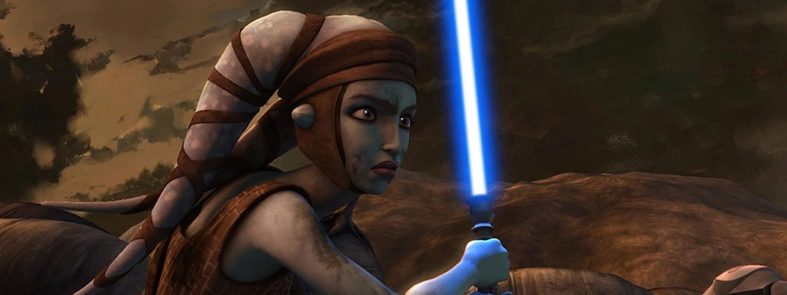
Peuple élégant et diversifié de Ryloth, reconnaissable à leurs lekku (appendices crâniens). Leur culture est riche mais souvent marquée par l’oppression et l’esclavage. Ils sont présents dans tous les milieux : politique, militaire, artistique ou criminel.
La Twi'leks la plus connu est surement la chevalier Jedi Aayla Secura.
Les Zabraks
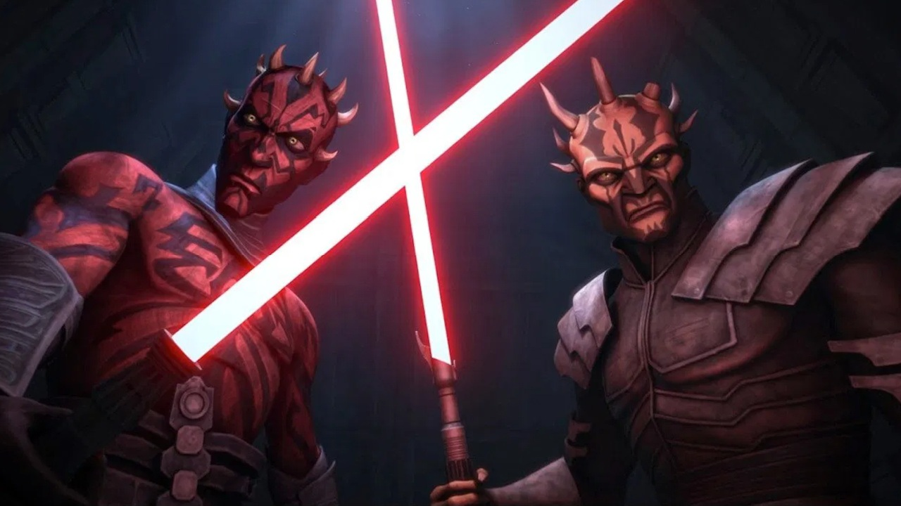
Espèce résistante et déterminée, connue pour ses cornes et ses tatouages rituels. Leur mentalité est centrée sur la volonté, la discipline et la survie. Beaucoup deviennent guerriers, chasseurs ou mercenaires, et certains basculent vers le côté obscur.
Les Zabraks les plus connus sont sans aucun doute Maul et son frère Savage Opress, ils on voulu prologer l'héritage Sith a leur façon et ont été punis par Dark Sidious.Les Droïdes
L'amée droïde des Séparatistes
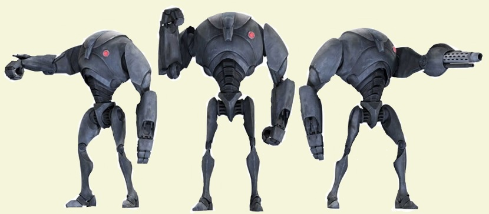
L’armée droïde des Séparatistes est une force entièrement mécanisée créée par la Confédération des Systèmes Indépendants pour affronter la République durant la Guerre des Clones. Produite en masse par les usines de la Fédération du Commerce et des Techno‑Sindicat, elle mise sur le nombre, la coordination et la spécialisation plutôt que sur la qualité individuelle.Commandée par les leaders séparatistes et supervisée par des droïdes tactiques, cette armée comprend des modèles variés : simples fantassins, unités d’élite, blindés autonomes et droïdes assassins. Bien que moins efficaces que les clones au combat rapproché, leur quantité écrasante et leur adaptabilité en font une force redoutable dans les grandes batailles.
Et voici les 5 type de droïdes Séparatistes les plus connus de la saga:
| top | nom | descriptif |
|---|---|---|
| 1 | Droïde de combat B1 | Le soldat de base des Séparatistes. Faible individuellement mais produit par millions. Reconnaissable à sa silhouette fine et à sa voix comique. |
| 2 | Droïde super‑combat B2 | Plus lourd, plus puissant et plus résistant que le B1. Capable de tirer sans arme externe et très efficace en assaut frontal. |
| 3 | Droïdeka (Destroyer) | Unité roulante équipée de boucliers énergétiques. Très rapide, extrêmement dangereuse, difficile à neutraliser sans Force ou explosifs. |
| 4 | IG‑100 MagnaGuard | Garde du corps des généraux séparatistes comme Grievous. Agile, précis, capable d’affronter des Jedi grâce à leurs bâtons électrostaff. |
| 5 | Droïde tactique (T‑series) | Cerveau stratégique de l’armée droïde. Analyse les batailles, optimise les formations et dirige les troupes avec une logique froide et efficace. |
Les droïdes en général
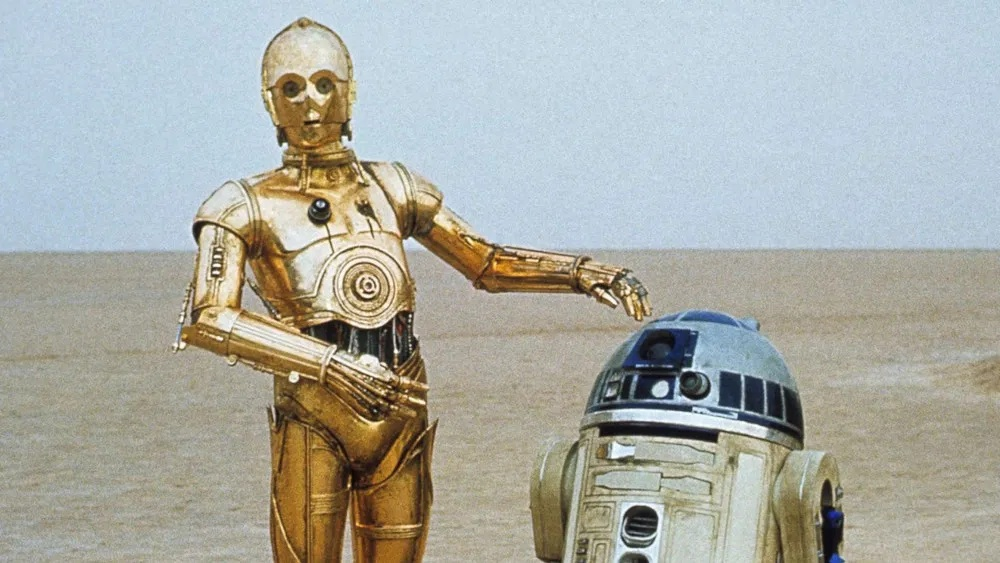
Les droïdes sont omniprésents dans la galaxie et remplissent tous les rôles imaginables : assistance, réparation, traduction, combat, stratégie, médecine ou infiltration. Certains sont programmés pour obéir strictement, d’autres développent une personnalité propre, parfois même des émotions. Ils peuvent être compagnons fidèles, armes redoutables ou outils indispensables au quotidien. Leur diversité technologique et culturelle en fait une composante essentielle de la vie galactique, aussi bien chez les Jedi, les Sith, les Rebelles, l’Empire ou les criminels.
Et voici les 5 droïdes les plus connus de la saga:
| top | nom | descriptif |
|---|---|---|
| 1 | R2‑D2 | Astromécano courageux et ingénieux. Héros discret de la saga, il sauve la galaxie à de multiples reprises. |
| 2 | C-3PO | Droïde de protocole polyglotte, expert en étiquette et en diplomatie. Partenaire inséparable de R2‑D2.fun fact l'acteur de C3PO est le seul a avoir jouer dans les 9 films de la saga skywalker |
| 3 | BB-8 | Astromécano sphérique du pilote Poe Dameron. Rapide, expressif et extrêmement loyal. |
| 4 | K‑2SO | Ancien droïde impérial reprogrammé par la Rébellion. Sarcastique, puissant et sacrifié héroïquement dans Rogue One. |
| 5 | IG‑88 | Droïde assassin légendaire, l’un des plus dangereux de la galaxie. Chasseur de primes redouté et quasi indestructible. |
Les Résistant/Rebelles
Les Rebelles
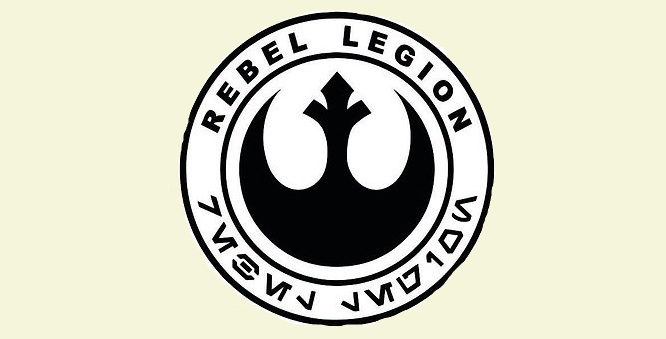
La Rébellion est une coalition de mondes, de cellules de résistance et d’anciens sénateurs unis pour renverser l’Empire Galactique. Née dans la clandestinité, elle mène une guerre faite de sabotage, d’espionnage et de batailles décisives. Malgré des moyens limités, elle triomphe grâce à la détermination, l’unité et l’espoir, jusqu’à détruire les deux Étoiles de la Mort et restaurer la République.
Et voici les 5 rebelles les plus connus :(Luc exclu)
| top | nom | descriptif |
|---|---|---|
| 1 | Leia Organa | Leader politique et militaire, fondatrice de l’Alliance Rebelle. Symbole de courage et de stratégie. |
| 2 | Han Solo | Contrebandier devenu héros rebelle. Pilote du Faucon Millenium et figure clé de la victoire contre l’Empire. |
| 3 | Mon Mothma | Architecte politique de la Rébellion. Elle unifie les cellules rebelles et proclame officiellement l’Alliance. |
| 4 | Lando Calrissian | Général rebelle, ancien administrateur de Bespin. Mène l’assaut final contre la seconde Étoile de la Mort. |
| 5 | Cassian Andor | Agent d’infiltration et d’espionnage. Opère dans l’ombre, mène des missions cruciales et joue un rôle déterminant dans l’obtention des plans de l’Étoile de la Mort. |
Les résistant
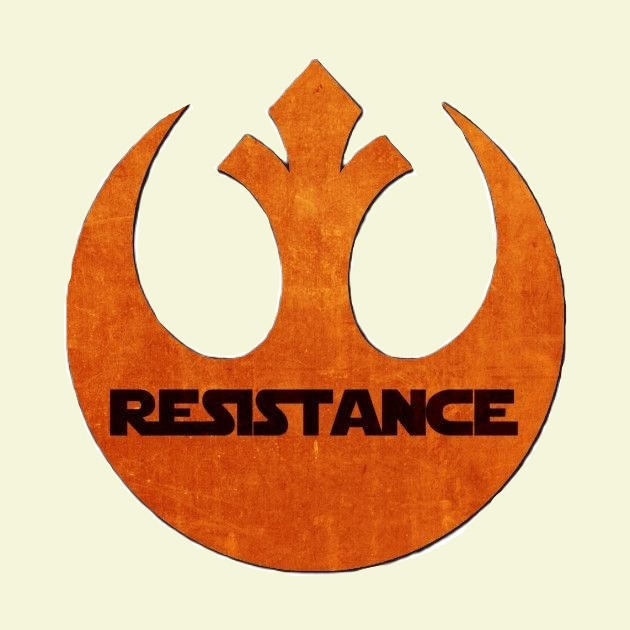
La Résistance est un mouvement militaire fondé par Leia Organa pour lutter contre la montée du Premier Ordre, alors que la Nouvelle République refuse d’agir. Plus petite et moins équipée que la Rébellion, elle repose sur la mobilité, l’audace et la loyauté de ses membres. Malgré des pertes énormes, elle survit grâce à la solidarité galactique et finit par rallier les peuples contre le Premier Ordre.
Et voici les 5 resistant les plus connus :
| top | nom | descriptif |
|---|---|---|
| 1 | Leia Organa | Générale de la Résistance. Pilier moral et stratégique du mouvement. |
| 2 | Poe Dameron | Meilleur pilote de la Résistance. Leader des escadrons. |
| 3 | Rey | Dernière Jedi de l’ère de la Résistance. Figure centrale de la lutte contre Snoke et Palpatine. |
| 4 | Finn | Ancien Stormtrooper du Premier Ordre devenu héros de la Résistance. |
| 5 | Rose Tico | Mécanicienne puis combattante engagée, symbole du courage des “petites mains” de la Résistance. |